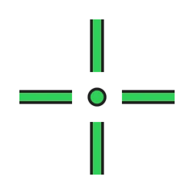
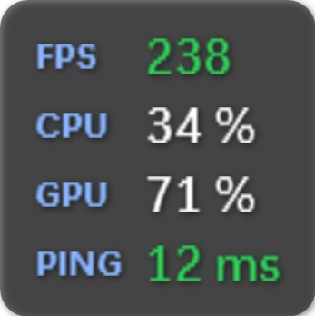

Musique & paroles
Pochette, contrôles, paroles synchronisées. Et à chaque changement de morceau, un halo aux couleurs de la pochette fait le tour de l'île.
Musique, stats, FPS, réticule, replay, IA… tout vit dans une île animée posée en haut de ton écran. Elle s'ouvre quand tu en as besoin, et disparaît quand tu joues.


32 Mo · mises à jour automatiques · essai gratuit de 3 jours, puis licence
Tout ce qu'elle sait faire
Pochette, contrôles, paroles synchronisées. Et à chaque changement de morceau, un halo aux couleurs de la pochette fait le tour de l'île.
Processeur, carte graphique, mémoire, températures et ping. Un simple survol suffit.
Un compteur de FPS dans un coin de l'écran. Ce n'est qu'une fenêtre posée par-dessus le jeu : rien n'est injecté.
Un viseur au centre de l'écran : formes, couleurs, image perso, raccourci Ctrl + Maj + X, et un profil différent par jeu.
L'île garde les dernières secondes de ta partie en mémoire. Un raccourci, et ton moment fort est enregistré.
Pose tes questions à Claude, ChatGPT, Gemini et d'autres, avec tes propres clés. Il connaît ton média et l'état de ton PC.
FPS, températures et saccades de chaque partie. Le bilan de la semaine s'exporte en image pour le partager.
À toi de jouer
Pas de vidéo : de vraies démos. Bouge la souris, clique, change les couleurs.
Quand la musique change, l'île s'illumine aux couleurs de la pochette.
Passe la souris dans la scène : le réticule te suit. Ctrl + Maj + X l'affiche ou le cache dans l'appli.
Une simple fenêtre par-dessus le jeu. Rien n'est injecté.
Processeur, carte graphique, mémoire, températures et ping.
L'île garde les dernières secondes en mémoire. Un raccourci et c'est enregistré.
FPS, températures et saccades de chaque partie, à exporter en image pour le partager.

Choisis une couleur : elle change tout le site. C'est pareil dans l'appli.
Dans l'appli
De vraies captures du logiciel. Fais défiler →


Optimiseur inclus
Chaque nettoyage montre d'abord ce qui sera supprimé. Rien n'est effacé sans ton accord, et tout reste dans un journal.
Vide les caches des applications fermées (navigateurs, lanceurs de jeux, applis Electron). Jamais tes données.
Fichiers temporaires, gros fichiers et doublons, classés par niveau de risque.
Repère les applis préinstallées et les programmes très lourds, puis les désinstalle si tu le décides.
Pour jouer : priorité du jeu, applis de fond mises en veille, le tout annulé à la fin de la partie.
SFC, DISM et analyse du disque, avec une progression claire et un verdict compréhensible.
Facultative : quand le PC est au repos, elle vide les caches sans risque. Jamais pendant un jeu ni sur batterie.
Pas de nettoyeur de registre : ces outils promettent beaucoup, gagnent très peu et peuvent abîmer Windows. Les pilotes ne sont jamais installés à ta place.
Prête en 1 minute
Aucun droit administrateur nécessaire.
Récupère DynamicIsland-win-Setup.exe (32 Mo) avec le bouton ci-dessous.
L'installateur met l'île en place (et .NET 8 si besoin). Si Windows affiche « SmartScreen » : Informations complémentaires puis Exécuter quand même, l'appli n'est pas encore signée numériquement.
Lance l'essai gratuit de 3 jours en un clic, ou colle ta clé de licence. Les mises à jour suivantes se font toutes seules.
Les réponses courtes
Non. L'essai dure 3 jours et n'est accordé qu'une fois par PC : réinstaller l'appli, changer de navigateur ou de connexion ne donne pas un nouvel essai. Il est lié à des identifiants anonymes du PC, détaillés dans la politique de confidentialité.
Après l'essai, Dynamic Island demande une clé de licence personnelle. Pour en obtenir une, contacte l'auteur via sa page GitHub.
Windows 10 (version 2004 ou plus récente) et Windows 11. L'installateur ajoute .NET 8 tout seul si ton PC ne l'a pas.
L'overlay et le réticule sont de simples fenêtres posées par-dessus l'écran. Rien n'est injecté dans les jeux, comme la Xbox Game Bar.
L'essentiel reste sur ton PC. Ce qui peut en sortir (licence, mises à jour, paroles, assistant IA…) est détaillé dans la politique de confidentialité. Aucune publicité, aucun outil d'analyse.
Oui. Ils sont gardés dans ton dossier utilisateur, avec une copie de sécurité à chaque nouvelle version.
Paramètres Windows → Applications → Dynamic Island → Désinstaller. Tes réglages restent dans %AppData%\DynamicIsland tant que tu ne supprimes pas ce dossier.